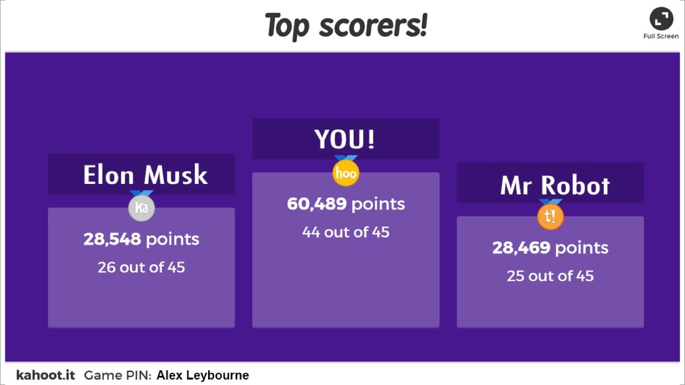

So many of you know Kahoot is the most important part of Coder Academy’s boot camps. Personally, I have only been able to make it to 2nd place, but with my extensive training, I will get that gold medal one day. Ok, so this won’t make you a Kahoot pro… but it will show you how to make your own shortcut in Terminal. So you’ll be one step closer to being a Terminal pro at least. Today we will be making a terminal shortcut that allows you to instantly open kahoot in your browser from terminal simply by typing “kahoot” and hitting enter. Tutorial Time: So to do this we need to make a shortcut also known as an “Alias”. To start off we want to navigate to our home directory by entering “cd ~”. This will take us to our root directory. we want to see if we have a file called “.bash_profile”. To do this we need to enter “ ls -a”. This will list all files in our directory including .hidden files. If you see “.bash_profile” already, fantastic! if not, don’t worry it’s easy to make one. To make a file just write “touch .bash_profile” and boom you just made a file. The next step is to edit the file, the easiest way to do so is by using the inbuilt text editor in terminal called Vim. To open the file to edit it type “vim .bash_profile” this will open the file up and to edit it you have to press “i”. Yours might look different to mine but that’s ok. Now it’s time to make our Alias. Our alias to open kahoot simply opens up the kahoot web page in our default browser. Type in [ alias kahoot=’open https://kahoot.it/’ ] You can use this to open any website of your choosing but just to be sure to include “http://” or “https://” in your weblink otherwise it will look for a local file or return an error instead. Now that you have entered in our alias. Press the ESC key and then type “:wq” to save and close the file. To make our new Alias to work we have to make Terminal reload the “.bash_profile”. Now to do this you can simply restart terminal but that's no fun. The other way to do it is to use a handy little snippet of code: “source ~/.bash_profile”. but as coders, we want to be even lazier and we can just type: “. ~/.bash_profile” to save ourselves some keystrokes. Now go ahead and try out your new Alias, if done correctly Kahoot should be opened up and ready for you to go for gold! Well, now you have the perfect shortcut to load up kahoot quickly from your terminal. Saving you some valuable seconds to prepare yourself for victory! If you are having any issues go through and carefully check your code and remember you can use “quotation marks” or ‘apostrophes’ and if you have copied and pasted code it can sometimes be finicky and will be best to type it out yourself. Now that you have entered the world of Aliases you might be already thinking of other helpful ones you could make for yourself. Well, believe it or not, other people have had that idea before and have actually compiled a nice list of handy bash shell aliases.
Kahoot shortcut in Terminal
by Alex Leybourne
